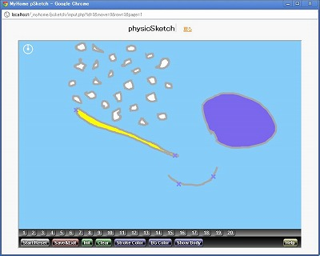

MyHome Portal （個人向けWebポータル）
2016/08/02以降、バージョンアップしていません。Webサービス利用している機能など、一部は正常動作しません。
個人または家族で使える自宅用のWebポータルシステム「MyHome Portal」をオープンソース/フリーソフトとして公開しています。
「ホームページインデックス(ブックマーク)＆検索」「付箋」「カレンダー(スケジューラ)」「旅行記」「ToDo」「掲示板」「RSSリーダー」「メモ」「フォトアルバム」「学習」「住所録＋PDF葉書宛名書き(OneToOneメール機能付)」「メール(一括受信)」「SVGお絵かき」「ペン画」「チャット(Chat)」「ID・パスワード管理」の他、「Google Maps & Earth」「GPSログ(GPX)ビューワ」「預貯金管理」「縦計だけの表計算」「HTML URL抽出&ファイルダウンロード」「テキスト縦書き表示 」「Excel to グラフ」「ソースコード表示&編集＋ファイルマネージャー 」「MySQL管理ツール」「ファイル暗号化/復号化」「タイマーアラート」などのツールを含んでいます。
トップページではブログパーツ貼り付けもできます。カレンダーでは、天気出現率表示や天気出現率地図機能もあります。カレンダーとGoogleマップの連携もできます。カレンダーとアルバムの連携もできます。アルバムでは動画サムネイルやFLV,MP4,WMV,MPG,MOV,M2TS(AVCHD)動画再生、時間分割サムネイル表示などもできます。掲示板ではWYSISWYG入力、FLV,MP4,WMV動画再生、お絵かきもできます。住所録では、日本百名山や世界遺産のGoogleマップ & Earth表示機能もあります。
jQuery Mobileを使ったスマートフォン(iPhone,Android端末)用のカレンダースケジュール表示、RSSリーダー、チャットのモジュールもあります。
Apache/PHP/MySQL(XAMPP)を使っています。
インストール手順に従ってインストールすれば、自宅PCで自分や家族用Webポータルを立ち上げできます。Apache/PHP/MySQLやシステム開発に興味のない方もお試しください。
最新バージョンを、ダウンロードからダウンロードしてください。
※ ブログのサーバーを移転したため、以下の説明文内のブログ記事へのリンクは有効ではありません。
コンセプト
- 自宅でポータルとして使えるシステム。(家庭内グループウェア)
- データはインターネット上ではなく、ローカルPCまたはローカルサーバに保管。
- 初級、中級プログラマにも理解可能なシステム。
- PHP、SQL、JavaScriptの知識だけで理解可能なシステム。
- PHPの良さを生かしたHTMLインラインコーディング。(なるべくprint文を使わない。)
- ブラックボックスの少ないシステム。
- オブジェクト指向型プログラミングを使わない。手続き型(関数型)プログラミングを採用。
- MVCを使わない。
- フレームワークに頼らないシステム。
- テキストエディタ以外の開発ツールを必要としない。
対象者
- 自分または家族専用のWebポータルサイトが作りたい。
- Webポータルサイトをインターネット上ではなく、ローカルPCまたは自宅サーバーで立ち上げたい。
- 日常的に良く使う機能が、個々のアプリケーションを起動せずに、ブラウザの中で出来たらうれしい。
- スケジュールその他自分の個人情報をインターネット上に置きたくない。
- パスワードなどのID情報をインターネット上に置きたくない。
- Webプログラム開発初心者。
- プログラミングを仕事でなく、趣味でやりたい。
- オブジェクト指向が苦手。
- MVCは面倒。
- システム全体を把握したい。(ブラックボックスは少ない方が良い。)
- フレームワークを使いたくない。(PHP、SQL、JavaScriptだけで開発したい。)
機能
- MyHome Portal トップページ：自宅ポータル
Google,Yahoo他使用頻度の高いサイトの検索ボタンとブックマーク(リンク集)を集めたポータルトップページです。ブックマーク(リンク集)は、ユーザー単位に各自が登録できます。ネット上の任意のブログパーツを貼ることもできます。
ホームページのイメージサムネイル表示もできます。
よく使いそうなサイトの検索ボタンもあります。掲示板やカレンダーの一部も合わせて表示できます。


- 付箋
ポスト・イットのような感じでメモを貼り付けられます。
- カレンダー（スケジューラー）
月間、年間、一覧表示ができるカレンダーです。カレンダーに、アイコンや写真をを貼り付けたりできます。アルバムフォルダとの連動もできます。アイコンは自分の好きなものを登録できます。スケジュールの地名からGoogleマップ検索や経路検索もできます。年間旅行先マップ等の作成もできます。天気出現率表示や天気出現率地図機能もあります。


- 旅行記
旅行の行き先の地点をGoogleマップでマーカー表示できます。
- 掲示板
MyHome Portalユーザー全員共有の掲示板です。WYSIWYGエディタでHTML投稿できます。
FLV,MP4,WMV動画再生やお絵かきもできます。


- RSSリーダー
ユーザーが任意に登録したRSS記事一覧ができます。
- メモ
ユーザー単位にメモを登録し、検索などができます。

- アルバム（写真のサムネイル表示＆スライドショー表示）
(ブログ記事)
サーバーのローカルディスクの任意のフォルダの写真を表示できます。2種類のサムネイル表示とスライドショータイプの表示ができます。全画面表示のオートプレイのスライドショーもできます。FLVやM2TSを含む動画のサムネイル表示もできます。FLV,MP4,WMV,MPG,MOV,M2TS(AVCHD)動画の再生もできます。動画の時間分割サムネイル表示もできます。デジカメで撮影したEXIF縦位置情報をもった画像は自動的に縦表示できます(環境設定が必要です)。
ImageMagickを使った画像編集もできます。ImageMagickのGUIインターフェースとしても利用できます。


- 学習
任意の問題集を登録して、自学習に使えます。

- 住所録
選択した名簿の宛名書きをしたPDF葉書を作成できます。
GoogleマップやGoogle Earthとの連動もできます。日本百名山や世界遺産をサンプルデータとして登録しています。


- GPSログ View
GPSログ(GPXファイル)をアップロードして、Google Mapsでルート表示ができます。
写真をルートマップの中に表示することも出来ます。JPEGに書き込まれているGPS情報を使う方法と、写真の撮影時間から撮影場所を特定する方法を選択できます。

- SVGお絵かき
SVG-editを使ったお絵かきができます。
SVG画像はデータベースに登録し、サムネイル表示等ができます。


- ペン画
万年筆、マーカーペン、スプレーガンタッチの絵が描けます。背景の紙のテクスチャも変更できます。


- チャット
MyHome Portalユーザー全員参加型のチャット(Chat)です。
MyHome Portalトップページに最新の投稿を表示することもできます。
チャット入力ページでは、表示件数や投稿の経過時間を指定できます。

- ID（パスワード）管理
インターネット上の各サイトのIDやパスワードを管理できます。
- ユーザー管理
MyHome Portalのユーザー管理ができます。ユーザー単位で、情報の公開(閲覧許可,書込許可)/非公開を設定できます。
- おまけツール
- (簡易) 預貯金管理 (ブログ記事)

- Google Maps & Earth (ブログ記事)
- Google Maps & Earth (複数地点/マーカー付) (ブログ記事)
- Yahoo ホームページ対訳 (指定したURLのホームページとYahoo翻訳で翻訳したページを左右に並べて表示) (ブログ記事)

- HTML テキスト抽出&メール送信 (ブログ記事)
- HTML URL抽出&ファイルダウンロード(画像、動画ダウンローダー)
- Excel to グラフ by Bluff (ブログ記事)
- Excel to グラフ by HTML5 (ブログ記事)
- 縦計だけの表計算
- ホームページのモノトーン表示 (サンプル) (ブログ記事)
- ホームページの拡大縮小表示 (サンプル) (ブログ記事)
- テキスト縦書き表示 (ブログ記事)
- MySQL管理ツール(データベース/テーブル/データ一覧/Excelインポート) (ブログ記事)
- 実運用環境バックアップツール
- ファイルマネージャー(暗号化/復号化付き) (ブログ記事)
- PHP/JavaScript ソースコード表示&編集＋ファイルマネージャー (ブログ記事)
- HTML テーブル CSSスタイル シミュレーション (サンプル) (ブログ記事)
- HTML カラーチャート (サンプル) (ブログ記事)
- Photoshop-like JavaScript Color Picker
- physicSketch (物理エンジンを使った物体落下シミュレーションゲーム)
(ブログ記事)(ブログ記事)


特徴・補足
- 自宅で個人や家族で使えるシステムを目指して作りました。家庭内LANでの利用を想定しています。
- 少人数の会社のイントラでの利用も可能かもしれません。セキュリティ対策は万全ではないので、スケジュール共有など機能を限定して利用願います。
- ユーザー登録など、インターネット上での利用を想定した機能も付けています。ただし、セキュリティ等保障はできませんので、インターネット上での実利用は、自己責任にてお願いいたします。あくまで、LAN内またはPC単体での利用を想定しています。
- 認証機能付きです。
- 簡単なユーザー管理機能もあります。
- ユーザー単位で他のユーザーに対して参照・書込の権限設定ができます。
- レコード単位での非公開の設定もできます。
- ただし、システム管理者はデータベースを直接見ることで全ての情報を参照ができてしまいますので、悪用しないように。
- カレンダーのスケジュール入力では、HTML入力ができます。アイコンやカラータグ挿入ボタン＆HTMLプレビュー機能もあります。独自の仕様です。
- ToDoやカレンダースケジュールを携帯電話等のメールアドレス宛に送信できます。
- ID管理では、二重の認証が必要なしくみにしています。
- ID管理では、パスワードを独自の方式で暗号化しています。ID情報は、2つのデータベースに分割して保存します。 暗号化のキーと2つのデータベースを別々にバックアップすれば、バックアップデータ一式を盗られない限り、実被害は受けにくいと思っています。
- 簡単なログ機能も付けています。
- 簡単なシステム管理者機能も付けています。
- コンテンツを追加しやすい構造にしています。
- ページ分割有りの一覧形式のページを簡単に作れる共有ライブラリを用意しています。一覧形式での編集もできます。
- 一覧形式の表示部分のみを、独自のphpソースに置き換えられます。
- Ajaxも一部で利用しています。
- スマートフォン(iPhone,Android端末)用のカレンダースケジュール表示、RSSリーダー、チャットも作ってみました。実機での検証はしていません。セキュリティ等保障はできませんので、インターネット上での実利用は、自己責任にてお願いいたします。


ライセンス
- フリーソフト/オープンソースとします。
- GPLライセンスに準拠します。
- * 商用/非商用に関わらず、自由に利用可。
- * 商用/非商用に関わらず、自由に修正可。
- * 商用/非商用に関わらず、自由に再配布可。
- * ただし、商用利用では、使用している各ライブラリのライセンスにご注意ください。
- * ただし、ReadMe-original.txtおよびCopyrightは消さないでください。
- * 感想、バグ報告、改善や機能追加のアイデアなどをEmailでお知らせいただけるとうれしいです。
返信がすぐにできないかもしれませんが、ご了承ください。
コンタクト
- Email： m.ok.2nd@gmail.com